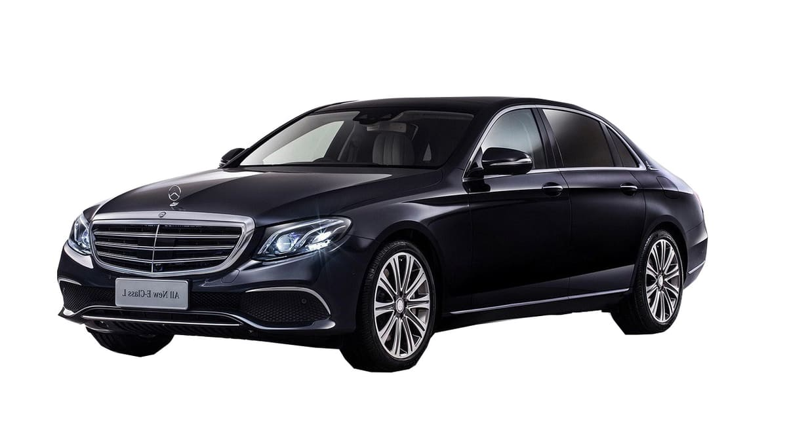

Transfert vers les golf des Marrakech
Nos minibus, idéaux pour les petits groupes de golfeurs, sont conçus pour offrir un maximum de confort. Chaque van dispose de sièges confortables, d’un espace généreux pour les jambes, et de suffisamment de place pour transporter
Location de minibus
- Navettes vers les golf des Marrakech
Trans-Marrakech : met à votre disposition des minibus et autocars confortables et spacieux afin d’assurer votre transport entre votre lieu d’hébergement et les différents golfs exceptionnels de Marrakech tels Palm Ourika, Assoufid, Royal Palm, Golf Royal
Nous proposons des formules de transferts et mise à disposition personnalisables selon vos besoins en transport tout en vous garantissant une flexibilité au niveau des horaires et lieux de prises en charge et dépose.
Tarifs incluant l'aller-retour
N.B : Les tarifs ci-dessous sont valables pour les trajets depuis les hôtels et riads situés dans le centre-ville de Marrakech (Médina, Guéliz, Hivernage). Si votre adresse de départ se trouve en périphérie de Marrakech, comme la Palmeraie, Agdal, Targa, ou dans une autre zone éloignée, un supplément sera ajouté aux prix indiqués.
Tarifs incluant l'aller-retour
Tarif sur demande. Indiquez vos dates, le nombre de passagers et votre hebergement : nous repondons avec un prix ferme, net a payer, sous 24 heures ouvrees.
Pour plus de 13 personnes ou pour des réservations multiples merci de nous contacter
Transport aux différents clubs de golf à Marrakech
Chez Trans Marrakech, nous comprenons que le confort et la commodité sont essentiels pour les golfeurs en déplacement. C'est pourquoi nous mettons à votre disposition une flotte de minibus et de bus conçus pour répondre aux besoins des petits, moyens et grands groupes de golfeurs.
Nos véhicules sont spacieux et équipés de toutes les commodités nécessaires pour assurer un voyage agréable et relaxant vers les parcours de golf de Marrakech et ses environs. Que vous voyagiez en petit ou en grand groupe, nous avons le véhicule parfait pour vous.
Minibus pour petits groupes
Nos minibus, idéaux pour les petits groupes de golfeurs, sont conçus pour offrir un maximum de confort. Chaque van dispose de sièges confortables, d’un espace généreux pour les jambes, et de suffisamment de place pour transporter tout votre équipement de golf. La climatisation et les systèmes audio modernes sont également disponibles pour rendre votre trajet encore plus agréable.
Bus pour moyens et grands groupes
Pour les moyens et grands groupes, nos bus sont la solution parfaite. Ces véhicules spacieux peuvent accueillir jusqu'à cinquante passagers, avec suffisamment de place pour les sacs de golf et autres équipements. Les sièges inclinables et rembourrés assurent un confort optimal durant le trajet, tandis que les grands coffres garantissent que tout votre matériel est transporté en toute sécurité.
Services et équipements
Tous nos minibus et bus sont équipés de :
- Climatisation : Pour garantir une température agréable quelle que soit la saison.
Sièges confortables : Conçus pour offrir un soutien optimal lors des trajets plus longs.
Espace pour les équipements : Compartiments de rangement spacieux pour les sacs de golf et autres bagages.
Systèmes audio modernes : Pour votre divertissement durant le trajet.
Conducteurs professionnels : Nos chauffeurs expérimentés connaissent parfaitement les routes de Marrakech et ses environs, assurant des trajets sûrs et ponctuels.
En choisissant nos services de transport, vous bénéficiez non seulement de véhicules confortables et bien équipés, mais aussi d'une expérience sans souci, vous permettant de vous concentrer pleinement sur votre activité de golf. Nous nous engageons à offrir un service de haute qualité pour que votre déplacement vers les parcours de golf soit aussi agréable que possible.
Les golfs célèbres de Marrakech
Marrakech, souvent appelée la « Ville Rouge », est rapidement devenue une destination de golf incontournable pour les passionnés du monde entier. Située entre les montagnes de l'Atlas et le désert, cette ville marocaine offre des conditions idéales pour le golf avec son climat ensoleillé et ses paysages à couper le souffle.
La ville abrite plusieurs parcours de golf de renommée internationale, conçus par des architectes de renommée tels que Robert Trent Jones Sr., Kyle Phillips, et Jack Nicklaus. Ces parcours offrent une variété de défis adaptés à tous les niveaux de compétence, des débutants aux professionnels aguerris.
- Parmi les plus célèbres, le Royal Golf Marrakech est un joyau historique, fondé en 1923. Ce parcours mythique est bordé de palmiers, d'oliviers et de cyprès, offrant un cadre pittoresque et une atmosphère paisible. Le Royal Golf a accueilli de nombreuses personnalités célèbres et continue d'être une destination prisée pour les amateurs de golf du monde entier.
Le parcours d'Al Maaden, avec son design moderne et ses influences artistiques, est un autre bijou golfique de Marrakech. Il se distingue par ses plans d'eau stratégiquement placés et ses vues imprenables sur les montagnes de l'Atlas, offrant une expérience de jeu à la fois stimulante et visuellement époustouflante.
Assoufid Golf Club est également un incontournable pour les golfeurs visitant Marrakech. Ce parcours offre un mélange unique de fairways ondulés et de paysages désertiques, avec des vues panoramiques sur les montagnes de l'Atlas en toile de fond. Il a été plusieurs fois récompensé pour son design exceptionnel et son entretien impeccable.
Les amateurs de golf à Marrakech bénéficient non seulement de parcours de haute qualité, mais aussi d'installations modernes et de services haut de gamme. Les clubs de golf locaux proposent souvent des leçons avec des professionnels certifiés, des équipements de pointe à louer et des clubhouses luxueux où les golfeurs peuvent se détendre après une partie.
Tweet this article
Nous vous garantissons
- Prix réduit.
- Voyage en privé.
- Liberté en voyage avec possibilité de vous arrêter là où vous le souhaitez.
- Formules flexibles et bien adaptées à vos besoins.
- Pas la peine de vous déplacer à une station de bus notre chauffeur vous prendra en charge à votre hébergement.
Nos excursions
Soirée folklorique la fantasia Chez Ali
Excursion Essaouira au départ de Marrakech ( 1 jour )
Excursion Ait Ben Haddou et Ouarzazate ( 1 jour )
© 2015 | Mentions légales